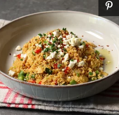

Chicken Couscous

Description
Take a break from pasta, rice, and potatoes with this quick chicken couscous bowl.
Made with chicken breast (or thighs, or even leftover chicken!) and diced veggies of your choice,
it's an impressive meal that takes just minutes to make once all the ingredients are prepped.
The chicken is moist and tender, the couscous is light yet satisfying, and the veggies add color, flavor, and texture.
It can be eaten at any temperature and would be perfect to pack for a picnic
Ingregiants
For the couscous bowl
- 1¼ cups whole wheat couscous
- ½ teaspoon kosher salt
- ¼ teaspoon freshly ground black pepper
- 1 pinch cayenne pepper
- 3 tablespoons olive oil
For the rest
- 1 (8 ounce) skinless, boneless chicken breast half
- 1 pinch kosher salt to taste
- 1 tablespoon olive oil, or more to taste
- ½ cup diced red onion
- 1 cup chicken broth
- ½ cup diced zucchini
- ½ cup diced green beans
- ½ cup diced red bell pepper
- ¼ cup thinly sliced green onions
- ½ teaspoon smoked paprika
- ½ teaspoon ground turmeric
- 2 tablespoons chopped flat-leaf (Italian) parsley, or to taste
- 2 tablespoons crumbled feta cheese, or to taste
- 1 pinch chili flakes
Steps
- Place couscous in a heat-proof mixing bowl. Add salt, pepper, cayenne, and olive oil;
stir with a spoon until all couscous is coated with oil. Level off to smooth the top and set aside.
- HSeason chicken on both sides with salt.
- Heat olive oil in a saucepan over high heat. Add chicken and sear for 2 to 3 minutes on one side. Flip and add onions. Sear chicken on second side, while sauteing onions at the same time, for 2 to 3 minutes.
- Remove chicken to a plate and let cool for a few minutes. Cut chicken into 1/2-inch cubes and return to the saucepan.
- Add chicken broth, zucchini, green beans, bell pepper, green onions, paprika, and turmeric to the saucepan. Place over high heat. As soon as it boils, remove from the heat and carefully dump it on top of the couscous; do not stir. Immediately wrap bowl tightly with foil and set a timer for 5 minutes.
- When timer goes off, unwrap foil and toss in parsley. Stir to combine ingredients. Taste and adjust for salt.
- Spoon couscous onto serving plate and garnish with feta cheese, chili flakes, and parsley and a drizzle of olive oil.